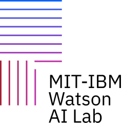

Shuaicheng Zhang

About Me
Hi there, I am a final-year PhD student in the Department of Computer Science at Virginia Tech, fortunately advised by Dr. Dawei Zhou. My research is centered on graph learning and its applications, with a strong emphasis on real-world problems such as AI for finance and predictive maintenance.
🔍 Research Focus
- Graph representation learning, exploring expressive and scalable models for complex graph data
- Graph neural networks (GNNs) for heterogeneous and heterophilous graphs
- Graph-augmented foundation models, investigation into LLMs enhanced with graph structure.
- Applications in AI for Finance and predictive maintenance, grounding theoretical advances in impactful domains.
Internship

2025 — Research Intern, Microsoft Research, Redmond, WA, USA

2023 — Research Intern, MIT-IBM Lab, Cambridge, MA, USA
2021 — NLP Research Intern, Nature Language Processing Team, Deloitte, NY, USA
2017 — Software Development Engineer Intern, Trust Team, Hundsun Technologies Inc., Hangzhou, China
News
| 06/2025 | Starting my internship at Microsoft on GNN for Database Foundation Model— see you in Redmond 😊! |
|---|---|
| 05/2025 | One paper accepted at KDD Benchmark 2025 — see you in Toronto 😊! |
| 05/2025 | Recognized as EXCELLENT Reviewer (Top 25%) by KDD 2025 February Track 😊! |
| 12/2024 | Recognized as OUTSTANDING Reviewer (Top 10%) by KDD 2025 August Track 😊! |
| 10/2024 | One paper accepted at IEEE BigData 2025 — see you in DC 😊! |
| 07/2024 | One paper accepted at KDD 2025 — see you in Toronto 😊! |
| 09/2023 | One paper accepted at ICAIF 2023 with oral — see you in New York 😊! |
| 07/2023 | Attending ICML 2023 in Honolulu, HI — see you at our poster session 😊! |
| 05/2023 | New preprint available! |
| 05/2023 | Joining IBM-MIT Lab this summer to work on deep graph generative models! |
| 05/2023 | One paper accepted at ICML 2023 — see you in Hawaii 😊! |
| 04/2023 | Thank you to ML Day-Amazon 2023 for the travel grant! |
| 03/2023 | Selected as a CCI Cyber Innovation Scholar! |
| 10/2022 | Attending CIKM 2022 in Atlanta, GA — see you at our workshop 😊! |
| 10/2022 | Thank you to CIKM 2022 NSF for the travel award! |
| 06/2022 | Serving as Publicity Chair of the 1st Trustlog workshop@CIKM22 |
| 05/2022 | My website is alive! 🎉 |
| 04/2022 | One paper accepted at Findings of NAACL 2022 — see you in Seattle 😊! |
Publications
2025
-
 When Heterophily Meets Heterogeneity: Challenges and a New Large-Scale Graph BenchmarkIn Proceedings of the 31st ACM SIGKDD Conference on Knowledge Discovery and Data Mining (KDD), 2025
When Heterophily Meets Heterogeneity: Challenges and a New Large-Scale Graph BenchmarkIn Proceedings of the 31st ACM SIGKDD Conference on Knowledge Discovery and Data Mining (KDD), 2025 -
 MentorPDM: Learning Data-Driven Curriculum for Multi-Modal Predictive MaintenanceIn Proceedings of the 31st ACM SIGKDD Conference on Knowledge Discovery and Data Mining V. 1, 2025
MentorPDM: Learning Data-Driven Curriculum for Multi-Modal Predictive MaintenanceIn Proceedings of the 31st ACM SIGKDD Conference on Knowledge Discovery and Data Mining V. 1, 2025 -
 Scientific Hypothesis Generation and Validation: Methods, Datasets, and Future DirectionsCoRR, 2025arXiv preprint
Scientific Hypothesis Generation and Validation: Methods, Datasets, and Future DirectionsCoRR, 2025arXiv preprint
2024
-
 UnifiedGT: Towards a Universal Framework of Transformers in Large‑Scale Graph LearningIn IEEE International Conference on Big Data (BigData), 2024
UnifiedGT: Towards a Universal Framework of Transformers in Large‑Scale Graph LearningIn IEEE International Conference on Big Data (BigData), 2024
2023
-
 Personalized Federated Learning under Mixture of DistributionsIn Proceedings of the 40th International Conference on Machine Learning (ICML), 2023
Personalized Federated Learning under Mixture of DistributionsIn Proceedings of the 40th International Conference on Machine Learning (ICML), 2023 -
 TGEditor: Task‑Guided Graph Editing for Augmenting Temporal Financial Transaction NetworksIn Proceedings of the Fourth ACM International Conference on Artificial Intelligence and Finance (ICAIF), 2023
TGEditor: Task‑Guided Graph Editing for Augmenting Temporal Financial Transaction NetworksIn Proceedings of the Fourth ACM International Conference on Artificial Intelligence and Finance (ICAIF), 2023 -
 GPatcher: A Simple and Adaptive MLP Model for Alleviating Graph HeterophilyCoRR, 2023arXiv preprint
GPatcher: A Simple and Adaptive MLP Model for Alleviating Graph HeterophilyCoRR, 2023arXiv preprint
2022
-
 Extracting Temporal Event Relation with Syntax‑guided Graph TransformerIn Findings of the Association for Computational Linguistics: NAACL, 2022
Extracting Temporal Event Relation with Syntax‑guided Graph TransformerIn Findings of the Association for Computational Linguistics: NAACL, 2022
My Cats
Cats are connoisseurs of comfort.
– James Herriot
Here are some photos of my cats. Each one has their own unique personality and brings joy to my life in their own special way.


From left to right: Jojo and Joy enjoying their favorite spots.


More of my cats being their adorable selves.